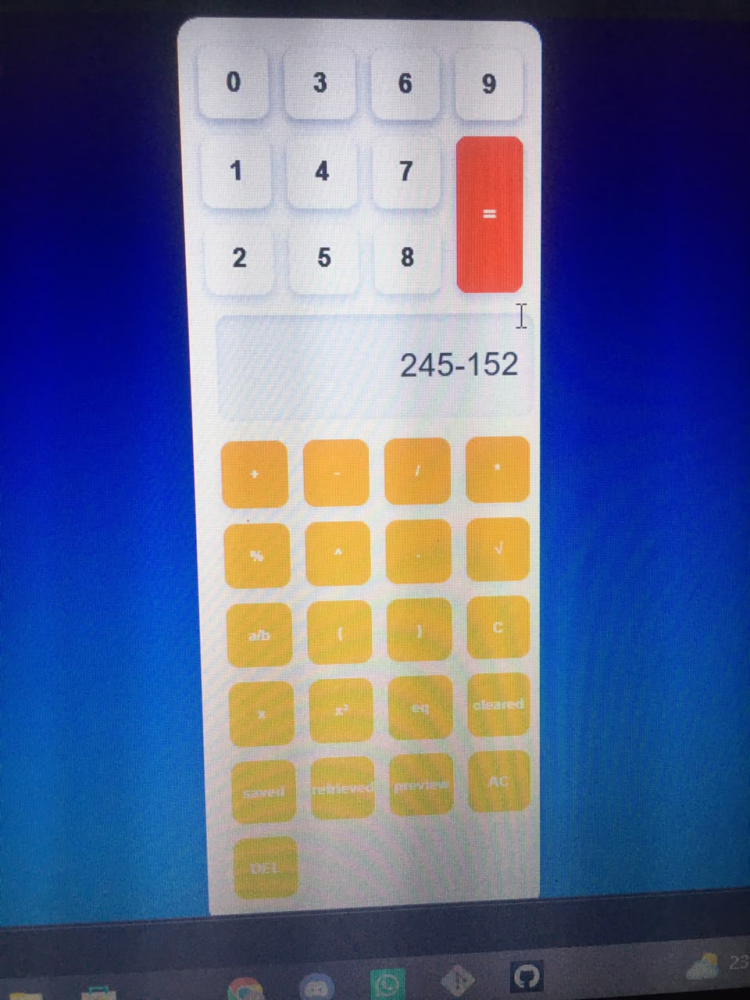
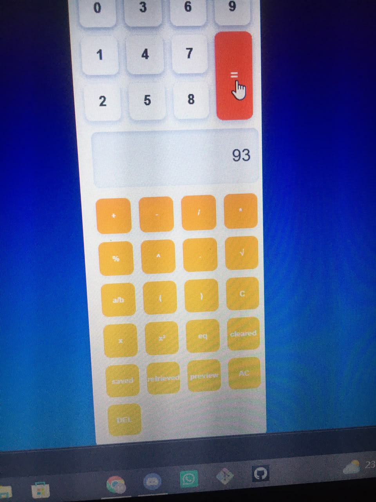
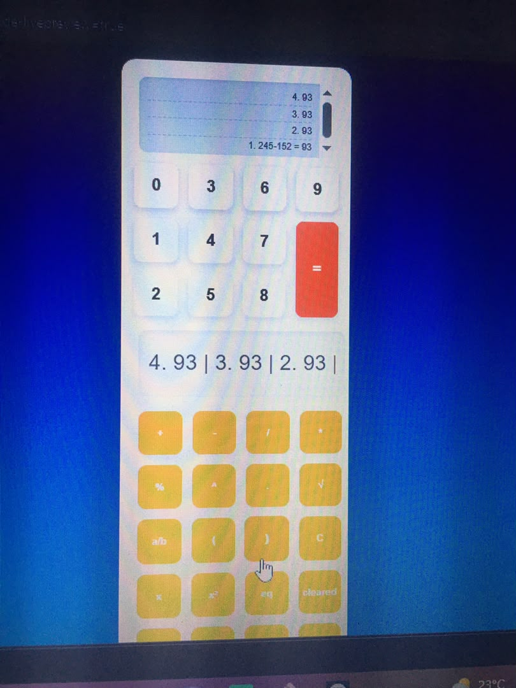
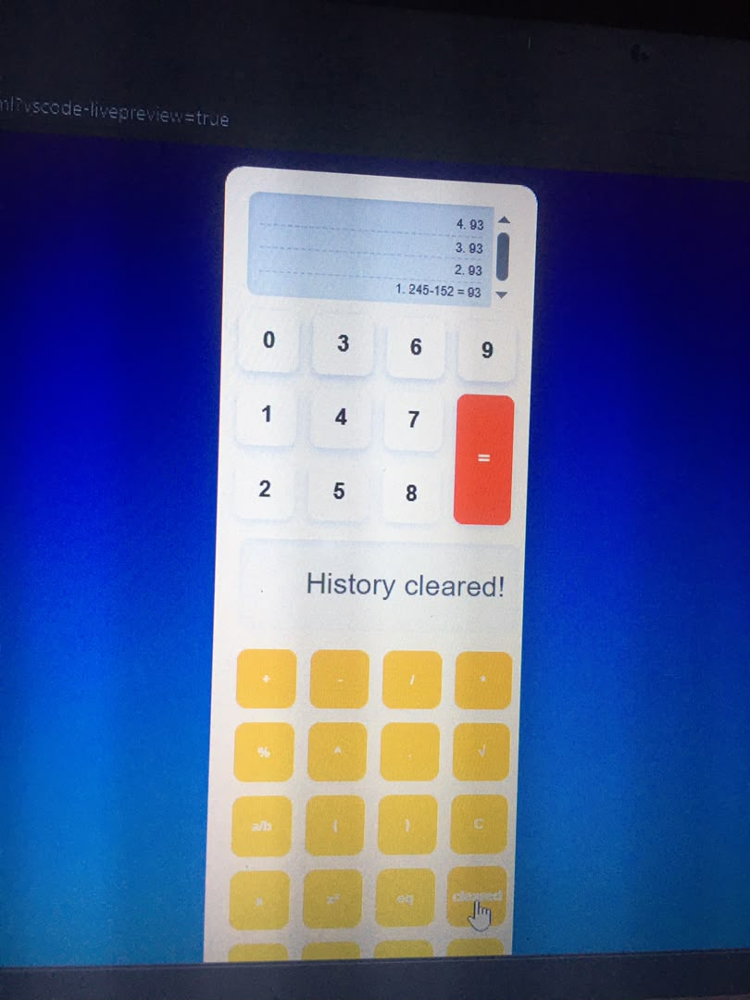
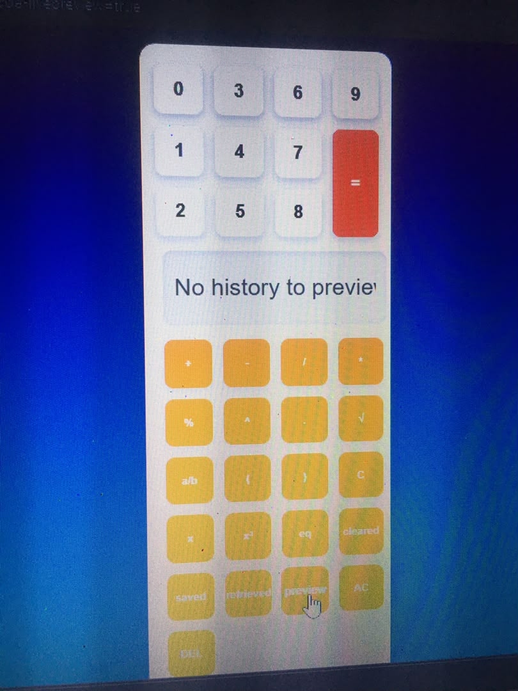

1 SAVED
Pushes the current display value onto the history list and
immediately persists it with localStorage.setItem().
The CALCULATOR HISTORY feature works by recording every calculation performed by the user and storing it in a history list. This allows users to review, retrieve, and manage previous calculations whenever needed.
Calculator History is a feature that records and manages the calculations performed by a user. It allows users to save, calculations for future reference and reuse view, retrieve, past calculations for re-use and delete specfic history records, AC Clear all functions to reset the calculator's current input and operations.
Pushes the current display value onto the history list and
immediately persists it with localStorage.setItem().
Reads the most recent entry, splits it on " = ", and
places just the result back onto the display.
Reverses the list so the newest calculation is on top, numbers each row, and renders it into the on-screen history panel.
Empties the array in memory and removes the saved copy with
localStorage.removeItem().
Delete Last Character is a calculator function that removes the most recently entered digit, operator, or character from the current input without clearing the entire expression.
AC (All Clear) is a calculator function that clears all current inputs, operators, results, and temporary calculation data, returning the calculator to its initial state.
An algorithm is a step-by-step procedure used to solve a problem or perform a task. In a calculator, the algorithm defines how the calculator responds when the user performs calculations and uses the history management buttons.
START
Input numbers and operators
IF "=" is pressed THEN
Calculate result
Save expression and result to history
Display result
END IF
IF "Preview History" is pressed THEN
Display all saved history records
END IF
IF "Retrieve History" is pressed THEN
Select history record
Display selected record
END IF
IF "Clear History" is pressed THEN
Delete all history records
END IF
IF "DEL" is pressed THEN
Remove last character from display
END IF
The conception of the calculator refers to the design idea and functional structure of the calculator system. It is based on providing users with not only basic arithmetic operations but also features for storing, managing, and reusing previous calculations. This calculator is conceived as a tool that performs mathematical calculations while maintaining a history of user activities. The system automatically records completed calculations and provides options to manage these records through various history functions.
Automatically stores each completed calculation and its result.
Ensures that past calculations are not lost after new operations are performed.
Allows users to view all previously saved calculations. Provides a quick way to review past operations and results.
Enables users to select and reload a saved calculation. Supports reuse of previous results without re-entering data.
Removes the last character entered in the current expression. Helps users correct typing mistakes without clearing the entire calculation.
Deletes all saved calculation records from the history storage. Allows users to start with an empty history list when needed.
Clears the entire current input, operators, and temporary values. Resets the calculator to its initial state without affecting saved history unless specifically programmed to do so.
The calculator is conceived as an interactive mathematical tool that combines calculation and history management capabilities. It performs arithmetic operations, stores completed calculations, allows users to preview and retrieve past records, provides editing through the Delete button, supports history removal through Clear History, and resets current operations through the AC button. This design improves efficiency, accuracy, and user convenience by ensuring that calculations can be saved, reviewed, reused, and managed effectively.





